Java Editor
|
| Improved Breadcrumb for Dark theme |
The Breadcrumb in the Java Editor now uses a dark background in the Dark theme.
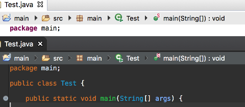
In the Light theme, the Breadcrumb uses a flat look style instead of a gradient.
|
Java Code Generation
|
| Improved hashCode() and equals() generation |
A new option in the Source > Generate hashCode() and equals()... tool allows you to create implementations using the
Java 7 Objects.equals and Objects.hash methods.
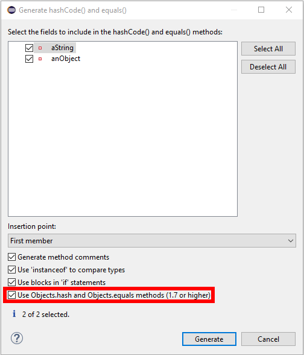
The above setup generates the following code:
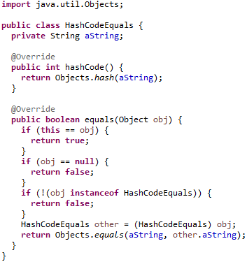
Additionally, arrays are handled more cleverly. The generation prefers the Arrays.deepHashCode and Arrays.deepEquals
methods when dealing with Object[], Serializable[] and Cloneable[] or any
type variables extending these types.
|
| Quick fix to create abstract methods |
The existing quick fix to create missing methods has been improved to create abstract method declarations. The option
only appears when the target class is an abstract class.
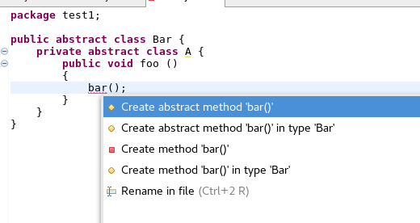
|
| Quick fix to convert to static import |
A new quick fix has been implemented that allows the user to convert static field accesses and static methods to use a static import.
It's also possible to replace all occurrences at the same time.

|
Java Views and Dialogs
|
| Quick Fix for JRE Compiler Compliance Problem Marker |
A new quick fix is provided on the JRE Compiler Compilance problem marker which is created when the compiler compliance
does not match the JRE being used. This quick fix provides the option of opening the Compiler Compliance page of the
project to fix the issue.
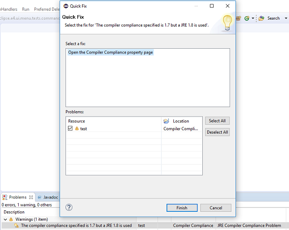
Selecting this option opens the Compiler Compliance property page for the specified project as shown below.
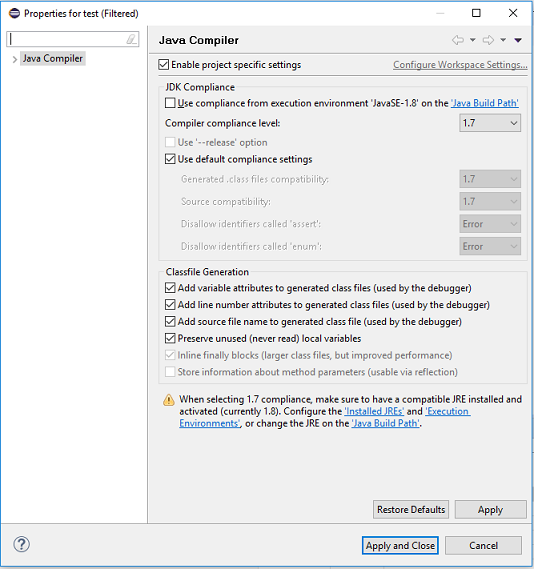
|
| Open Type dialog now always shows the full path |
The Open Type dialog now always shows the full path of all the matching items.
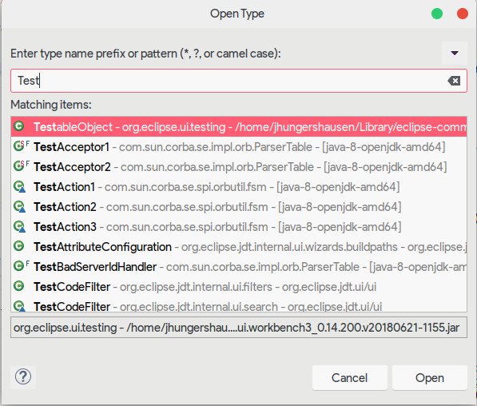
|
Java Formatter
|
| Keep simple loops in one line |
New formatter settings have been added that make it possible to keep the bodies of simple loops (without braces) in the same line as their headers, similar to previously existing setting for simple 'if' statements.
Different kind of loops ('for', 'while', 'do while') can be controlled independently.
The settings can be found in the profile editor under New Lines > In control statements > Simple Loops.
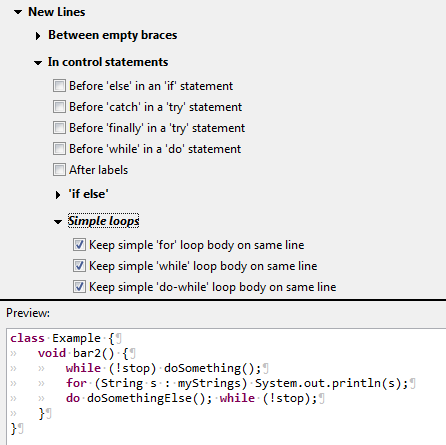
There's also a new setting to control how these loops should be handled if they exceed the maximum line width.
It's located under Line Wrapping > Wrapping settings > Statements > Compact loops ('for', 'while', 'do while').
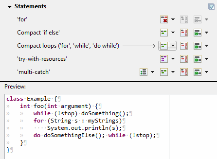
|
| Aling items in columns |
A feature previously known as align fields in columns has been expanded and can now be used for variable declarations and assignment statements as well.
An option has also been added to always align with spaces, even if tabs are used for general indentation.
This is very similar to the Use spaces to indent wrapped lines option and is useful to make the code look good in editors with differing tab width.
All the settings related to aligning are now in the new preferences subsection: Indentation > Align items in columns.
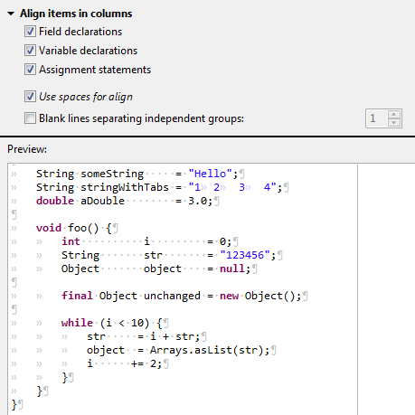
|
Debug
|
| Timeout for result of step operation |
Observing the result of step operations may slow down execution, which may be unusable if the step takes long already.
Therefore a timeout (default: 7000 ms) has been introduced after which the observation mechanism is disabled until the end of the step operation.
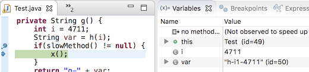
The timeout can be configured in Preferences > Java > Debug > Don't show if step operation takes longer than (ms).
|
| Option to hide running threads in Debug view |
A new option has been introduced in the Debug view to show or hide running threads.
Hiding running threads can be useful when debugging heavily multithreaded application, when it is difficult to find threads stopped at breakpoints among hundreds or thousands of running threads.
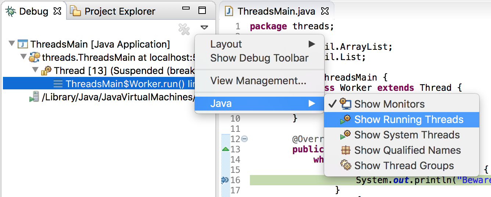
|
| Show Command Line button in Launch Configuration |
A new button Show Command Line has been added in the Java Launch Configuration dialog.

Clicking the button will open a dialog to show the command line used for launching the application.
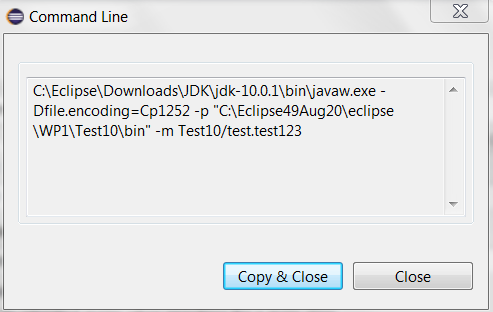
|
| Option to disable thread name changes in Debug View |
Thread name changes in the debuggee JVM are reflected in the Debug View. A VM option can now be used to disable this behavior,
in case the JVM communication necessary for the name updates is not desired.
The functionality can be disabled by specifying the following VM option
-Dorg.eclipse.jdt.internal.debug.core.model.ThreadNameChangeListener.disable=true
|
| Support for long classpath/modulepath |
Classpath and/or modulepath are now shortened if they are longer than current operating system limits.
If a temporary jar is needed to shorten the classpath (Java 8 and previous versions), a dialog is shown asking for confirmation.
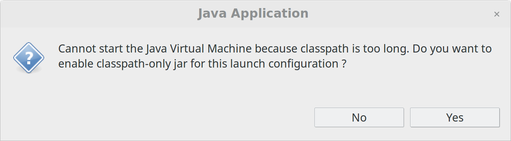
The option Use temporary jar to specify classpath (to avoid classpath length limitations) is available in the Classpath tab of the Run/Debug Configuration dialog.
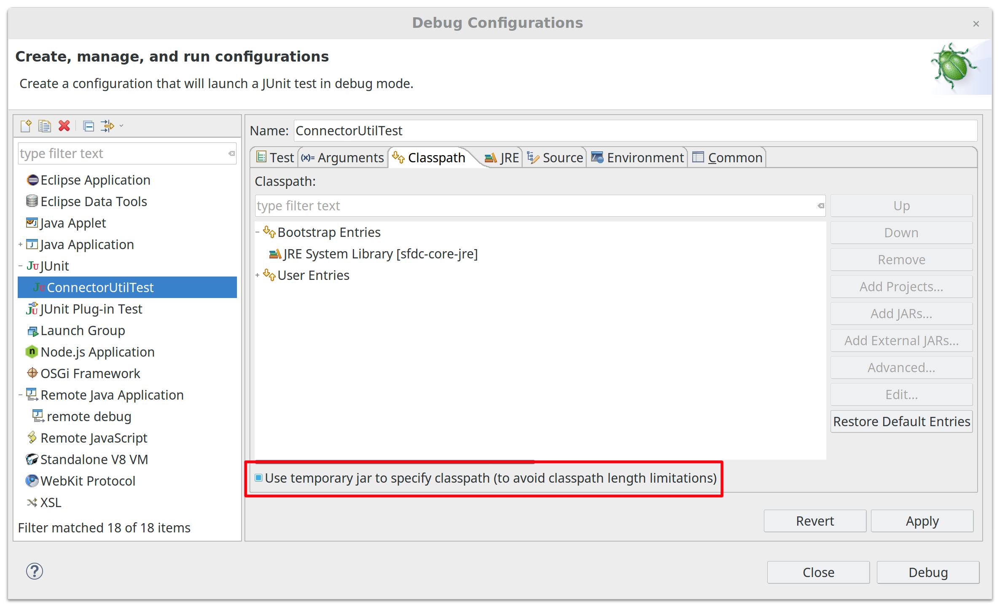
|